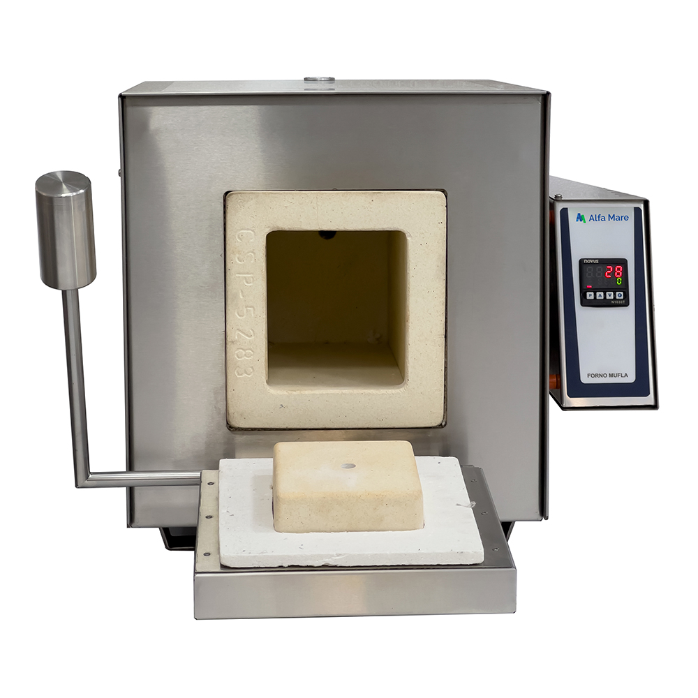
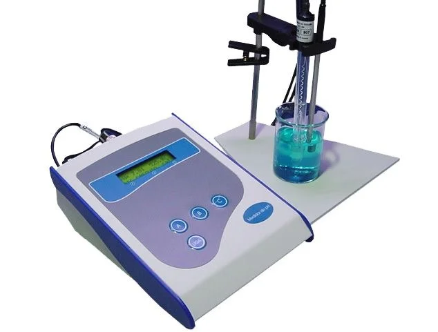
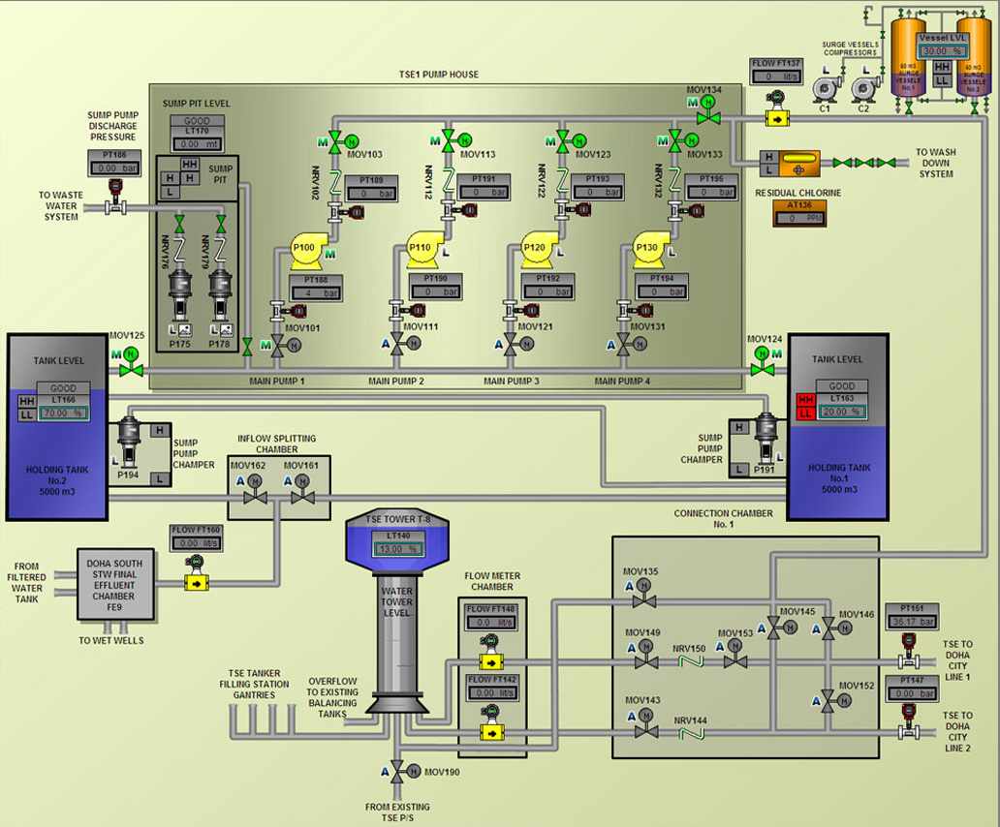

Glossário
Conceitos Gerais
- Biorreatores: equipamentos industriais em forma de tanque que abrigam microorganismos para decomposição de matéria orgânica, produzindo biogás e fertilizantes. Podem ser verticais ou horizontais, aeróbios ou anaeróbios.
- Biodigestores: são biorreatores exclusivamente anaeróbios.
- Digestão anaeróbia: alimentação de bactérias em ambientes sem oxigênio (O2), que gera biogás e digestato.
- Biogás: gás inflamável utilizado como combustível para geração de energia renovável, alternativa a combustíveis fósseis.
- Digestato: resíduo líquido ou pastoso da respiração anaeróbia com potencial uso como fertilizante agrícola.
- Plantas: unidades industriais e operacionais onde há a produção de biogás.
- Caixa de resíduos: ela recebe vários tipos de substratos líquidos, água de esgoto, resíduo de indústria de sorvete, lodo, vinhaça, entre outros e essa mistura toda é bombeada para os biorreatores horizontais.
Problemas Investigados
- Pontos de acúmulo: regiões onde o material orgânico dentro do biodigestor acumula-se indefinidamente, prejudicando a eficiência da mistura e produção.
Termos Metodológicos
- Caracterização do digestato: análises que auxiliam na compreensão das propriedades físico-químicas do digestato.
- Matéria seca: parte do material que sobra após secagem em estufa a 105°C por 6 horas.
- Matéria orgânica: porção do material que pode ser decomposta ou queimada.
- Cinzas: é o resíduo mineral inorgânico que permanece após queima completa da matéria orgânica em mufla a 600°C por 2 horas.
- pH: indica a acidez ou alcalinidade do digestato, medida fundamental para a sobrevivência das bactérias dos reatores.
- Viscosidade: mede a resistência do fluido ao escoamento (se ele é grosso ou ralo).
- Densidade: relação entre massa e volume (m/V).
- Mufla: “forno” de altas temperaturas utilizado em laboratórios para determinar teor de cinzas, ou matéria inorgânica. A queima é chamada de calcinação.

- pHmetro: instrumento eletrônico utilizado para medição do pH com eletrodos.

- Análises realizadas in triplicata: 3 repetições de cada teste para garantir resultados confiáveis e precisos.
Termos da Proposta Inicial
- Fluidodinâmica computacional (CFD): área da mecânica dos fluidos que utiliza computação para simular condições e compreender melhor como líquidos ou gases se comportam em determinadas situações. Neste caso, será utilizada para otimizar o desempenho dos biorreatores.
- Software de fluidodinâmica computacional (CFD) versão acadêmica: ferramenta de simulação digital utilizada para modelar o comportamento de fluidos. No projeto, será aplicada para entender a dinâmica dos fluidos dentro dos reatores.
- Comportamento hidrodinâmico: campo da física dedicado ao estudo do movimento e forças que agem sobre os fluidos, como o digestato dentro dos biorreatores.
- Características do escoamento: forma com que o fluido se move no sistema, se é laminar (organizada) ou turbulenta (agitada).
- Número de Reynolds: número adimensional da mecânica dos fluidos que indica as características do escoamento. É definido pela fórmula Re = (ρ · v · L) / μ, onde ρ é a densidade, v a velocidade, L é o diâmetro da hélice e μ é viscosidade do fluido. Re < 2.000 é característico de escoamento laminar; 2.000 < Re < 4.000 é típico da região de transição; enquanto Re > 4.000 é encontrado quando o escoamento está turbulento. É necessário para configurar o software de fluidodinâmica computacional.
- Malha: representação geométrica digital do espaço interno do biorreator, dividida em elementos para que o software de simulação possa calcular o movimento do fluido em cada parte.
- Domínio fluido do biorreator: área ou volume interno total que é ocupado pelo fluido e será analisado na simulação.
- Condições de contorno: dados de entrada inseridos na simulação que definem como o ambiente age com o meio externo.
- Modelagem da turbulência: uso de modelos matemáticos para prever efeitos complexos de agitação e turbulência no fluido dentro do biodigestor.
- Parâmetros da caixa de resíduos: Podem ser parâmetros geométricos, em específico do agitador utilizado, como o formato das pás, o ângulo de torção, comprimento, diâmetro e também parâmetros operacionais da caixa em geral.
- CAD solidworks: software de simulação 3D utilizado para desenvolvimento de produtos, simulações e design mecânico.
- Ansys Fluent: exemplo de software de CFD utilizado pela bolsista IC da UTFPR Londrina.
Outros Termos Tecnológicos e Institucionais
- CREA: Conselho Regional de Engenharia e Agronomia.
- ANPEA: Associação Norte Paranaense de Engenheiros Ambientais.
- SCADA: Supervisory Control And Data Acquisition. Programa utilizado para controlar remotamente e monitorar em tempo real os sistemas industriais.
